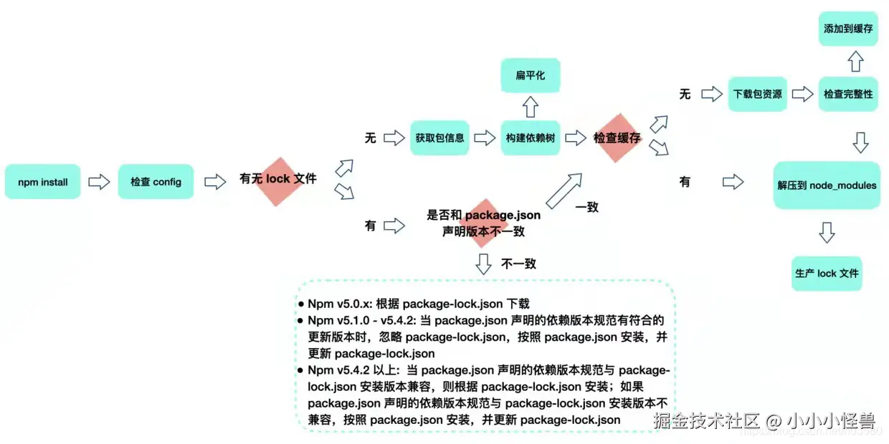

npm install 发生了什么
1. 读取 package.json
- 解析项目的依赖：
npm首先会读取当前目录下的package.json文件，以了解项目的基本信息和所需的依赖包列表。这个文件包含了项目的名称、版本、描述、脚本和依赖项等信息。
2. 检查 package-lock.json（npm 5 之后版本才支持该特性）
- 锁定依赖版本：
npm会检查是否存在package-lock.json文件。如果存在，npm 会根据该文件中锁定的版本来安装依赖。这确保了在不同环境中安装相同的依赖版本，避免因版本不一致导致的问题。
3. 下载依赖包
- 从注册表下载：
npm会根据package.json中的依赖项，查询npm注册表（默认是从 registry.npmjs.org下载相应的包，也通过配置使用其他的源）。 - 处理依赖关系：如果某个依赖包有自己的依赖（即子依赖），
npm会递归地解析并下载这些依赖包，直到所有依赖都被安装。 - 检查缓存：在 npm 5 之后的版本，也支持了使用缓存方式，减少了每次都完整从外部下载所有的包的次数，提升了下载速度
4. 安装依赖包
- 将包解压到
node_modules目录：下载的依赖包会被解压到当前项目的node_modules目录中。 - 更新缓存：下载的依赖包会也会记录并更新在缓存目录中。
- 更新
package-lock.json：如果没有package-lock.json文件，npm会生成一个，记录当前安装的确切版本和依赖关系树。
5. 执行生命周期脚本（可选）
- 运行安装后的脚本：如果依赖包中定义了生命周期脚本（如
preinstall、install、postinstall），npm会在适当的时机执行这些脚本。这些脚本可以用来执行特定的操作，比如编译代码或运行其他命令。
6. 更新全局依赖（可选）
- 如果你使用了
-g标志（如npm install -g package-name），npm会将包安装到全局node_modules目录中，而不是项目的node_modules目录。
7. 错误处理
- 处理错误：如果在安装过程中发生错误，npm 会输出相应的错误信息，并停止安装过程。你可以根据错误信息进行调试和修复。

yarn 改变了什么
Yarn 也是一个包管理器，还可以作为项目管理工具。无论你是小型项目还是大型单体仓库（monorepos），无论是业余爱好者还是企业用户，Yarn 都能满足你的需求。它是由 Fackbook 开发并开源的。
1. 性能
- npm：
- 在早期版本中，npm 的安装速度较慢，尤其是在处理大量依赖时。
- 从 npm 5 开始，npm 引入了
package-lock.json文件，并进行了性能优化，才明显提高了安装依赖的速度。
- Yarn：
- Yarn 在设计时就考虑了性能，使用了缓存机制，可以更快地安装依赖。
- Yarn 会并行安装依赖，而不是像 npm 早期版本那样串行安装，因此通常速度更快。
2. Lock 文件
- npm：
- 使用
package-lock.json文件来锁定依赖版本，从 npm 5 开始引入。 - 该文件确保在不同环境中安装相同版本的依赖。
- 使用
- Yarn：
- 使用
yarn.lock文件来锁定依赖版本。 - 这个文件的结构设计使得它更易于读取和理解，且在处理复杂的依赖关系时表现更好。
- 使用
3. 命令行
- npm：
- 使用
npm install安装依赖。 - 常用命令包括
npm install,npm update,npm uninstall等。
- 使用
- Yarn：
- 使用
yarn add安装依赖（相当于 npm 的npm install）。 - 常用命令包括
yarn add,yarn upgrade,yarn remove等。 - Yarn 的命令设计上更简洁，且提供了一些额外的功能，如
yarn upgrade-interactive，允许用户交互式地选择要升级的依赖。
- 使用
4. 依赖解析
- npm：
- 在处理依赖时，
npm会根据依赖树的结构来安装依赖，可能会导致同一依赖的多个版本被安装。
- 在处理依赖时，
- Yarn：
Yarn使用了更智能的依赖解析算法，通常会尽量避免安装同一依赖的多个版本，保持依赖树的扁平化。
5. 离线模式
- npm：
npm虽然支持缓存，但在最初的版本并不支持离线模式，即在本地存在依赖的缓存时，不需要从互联网上再重新检查或下载依赖，而直接安装。
- Yarn：
Yarn提供了更好的离线支持，允许用户在没有互联网连接的情况下安装之前已安装的依赖。
6. 工作区支持
- npm：
npm在 7.x 版本中引入了工作区的概念，允许在一个项目中管理多个包。
- Yarn：
Yarn早期就支持工作区，使得在 monorepo 项目中管理多个包变得更加简单。
pnpm 改变了什么
pnpm - 速度快、节省磁盘空间的软件包管理器
1. 磁盘空间使用
- pnpm：
pnpm使用一种独特的方式来管理依赖，它将所有的包存储在一个全局的内容寻址存储中，并使用硬链接（hard links）在项目的node_modules目录中引用这些包。这种方法显著减少了磁盘空间的使用，特别是在多个项目中共享相同的依赖时。
- npm 和 Yarn：
npm和Yarn通常会在每个项目的node_modules目录中安装所有依赖，虽然它们都使用扁平化依赖的方案，来尽可能的减少重复依赖的安装。
2. 性能
- pnpm：
pnpm通过缓存和硬链接的方式提高了安装速度，尤其是在安装大型项目时，通常比npm和Yarn更快。- 由于只下载一次依赖并在多个项目间共享，
pnpm在处理依赖时的效率也更高。
- npm 和 Yarn：
npm和Yarn经过多次优化，尤其是Yarn在性能方面表现良好，但pnpm在某些情况下仍然可以提供更好的性能。
3. 依赖解析和安装
- pnpm：
pnpm强制使用严格的依赖关系，确保每个包只能够访问其直接依赖的包，避免了潜在的“依赖地狱”问题。这种做法有助于确保包的行为更可预测。pnpm会在安装时验证所有依赖的版本，确保没有冲突。
- npm 和 Yarn：
npm和Yarn因为使用了扁平化依赖的方案，通过依赖提升，来减少重复依赖的安装，即将所有依赖都平铺安装到顶层的node_modules目录中，当存在同一依赖不同版本时就将另外一个版本安装在使用依赖的node_modules目录。所以这样就导致了会允许包访问其间接依赖，导致不同版本的依赖共存，使得依赖的使用存在安全问题（幽灵依赖）。
4. 工作区支持
- pnpm：
pnpm也支持工作区（workspace）功能，允许在一个项目中管理多个包，类似于Yarn的工作区功能。所以推荐使用pnpm来进行 monorepo 项目的管理。
- npm 和 Yarn：
npm从 7.x 版本开始引入工作区功能，而Yarn早期就支持此功能。
结语
本文中讨论了我们常用且是目前最流行的node.js包管理工具，这是我们日常开发中使用很频繁的工具。npm、yarn 和 pnpm 都有它们各自的优缺点，大家可以结合项目的具体情况来选择。